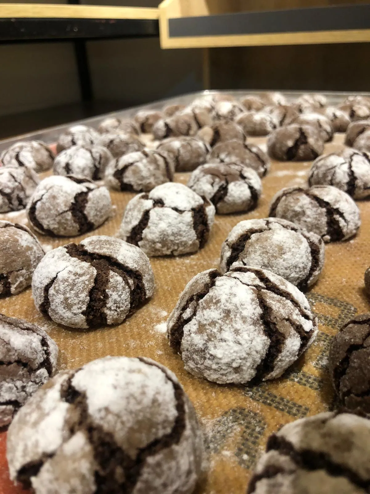

Lezzeti yalnızca üretmek değil, bir kültür olarak yaşatmak.

1971’den bu yana
1971 yılından bu yana lezzeti yalnızca üretmeyi değil, bir kültür olarak yaşatmayı ilke edinen Kemal Pastanesi, köklü geçmişini kalite ve zarafetle buluşturur. Kurulduğu ilk günden itibaren değişmeyen anlayışı, her ürünü aynı gün, en taze hâliyle ve en nitelikli malzemelerle sunmaktır.
Üretimin her aşamasında kalite ve hijyen prensipleri titizlikle uygulanır. Kemal Pastanesi için lezzet, ayrıntılara gösterilen özen, seçilen hammaddenin kalitesi ve ustalığın zamana yayılan birikimiyle anlam kazanır.
- 1971
- yılından bu yana
- 3
- şube, Osmaniye
- 08:00
- her gün açılış